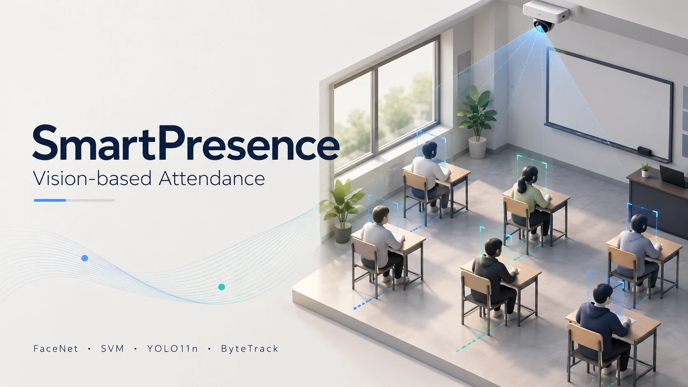
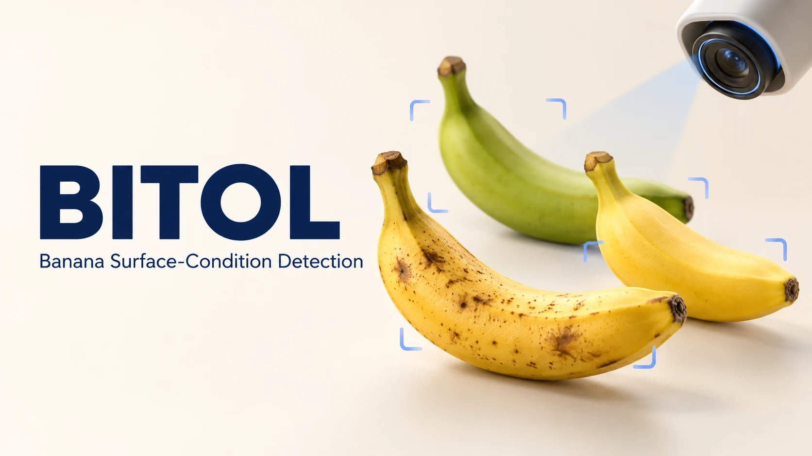
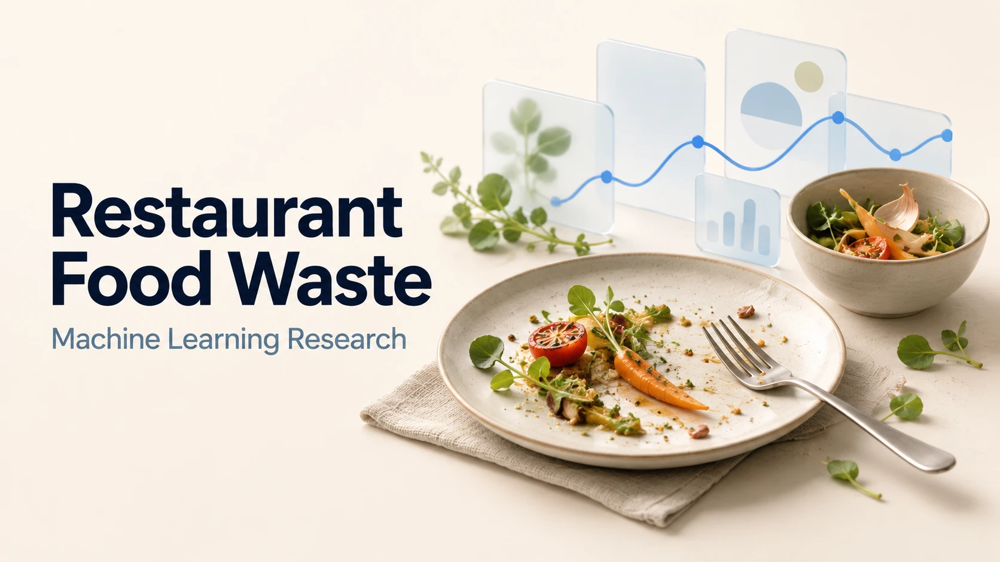
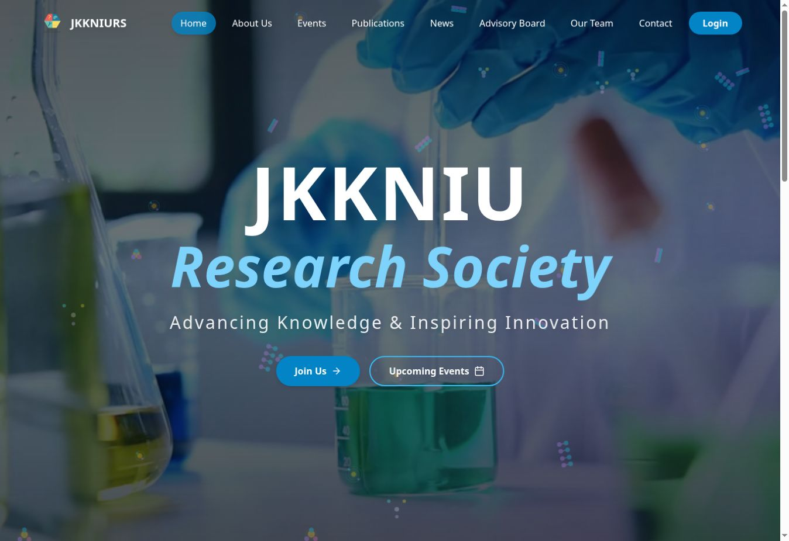
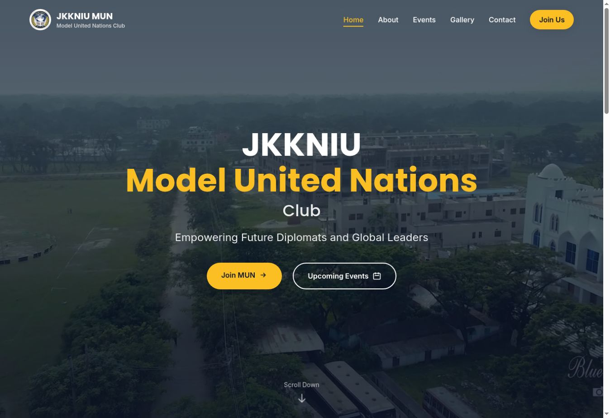
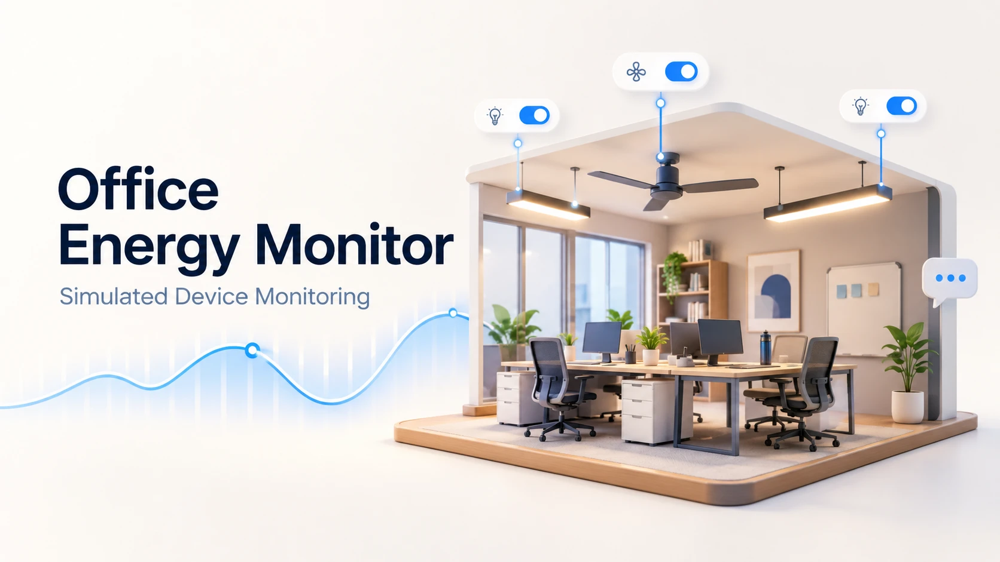

Every project, with its own image.
Twelve named covers. Original screenshots and research figures remain in each project’s detail gallery.

SmartPresenceIllustrated coverLUMOIllustrated cover
BITOL · Banana surface-condition detectionIllustrated coverTheatreStageAIIllustrated cover
Restaurant food-waste modellingIllustrated coverSmart Campus, Smart TransportIllustrated cover
JKKNIU Research SocietyActual website
JKKNIU Model United Nations ClubActual websiteAmader Online SchoolIllustrated cover
Office Energy MonitorIllustrated coverSpam email classificationIllustrated coverSmartStudyAIIllustrated cover